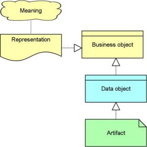

The Information Structure viewpoint is comparable to the traditional information models created in the development of almost any information system. It shows the structure of the information used in the enterprise or in a specific business process or application, in terms of data types or (object-oriented) class structures. Furthermore, it may show how the information at the business level is represented at the application level in the form of the data structures used there, and how these are then mapped onto the underlying infrastructure; e.g., by means of a database schema.
| Stakeholders | Domain and information architects |
| Concerns | Structure and dependencies of the used data and information, consistency and completeness |
| Purpose | Designing |
| Abstraction Level | Details |
| Layer | Business layer, Application layer, Technology layer |
| Aspects | Passive Structure |
Concepts and Relations
